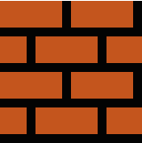
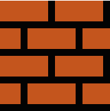

The History of Invincible Mario
Wie of wat is Invincible Mario?

Invincible Mario is een vorm die Mario kan aannemen na het gebruik van een Super Star. In deze staat wordt hij niet beïnvloed door de meeste vijanden en obstakels, en kan hij de meeste van hen verslaan door ze eenvoudig aan te raken.
Onoverwinnelijkheid wordt meestal weergegeven door een knipperend, van kleur veranderend personage.
Itsa me! Mario! Als Invincible Mario ben ik onverwoestbaar! 💪
Reis met me mee door de tijd en kijk hoe ik verander. Klik op het pijltje of op mij en laten we beginnen! Ciao!
Hover over mij!
World 1

1-1
Super Mario Bros. markeert het debuut van de Invincible vorm en keert terug in Super Mario Bros.: The Lost Levels. Vijanden die door deze vorm worden verslagen, geven dezelfde punten alsof ze door vuurballen zijn verslagen.
 

World 2

2-1
In Super Mario Bros. 2 krijg je Super Stars, en dus onoverwinnelijkheid, door vijf kersen te pakken. Omdat vijanden off-screen respawnen en harten spawnen voor elke acht verslagen vijanden, wordt deze vorm voornamelijk gebruikt om gezondheid te herstellen.
2-2
In Super Mario Bros. 3 maakt Invincible Mario een salto als hij springt. Er zijn enkele blokken die normaal gesproken munten bevatten, maar in plaats daarvan Super Stars bevatten. Hierdoor kan de speler een lange periode van onoverwinnelijkheid aan elkaar rijgen en zo nog meer punten behalen.

World 3

3-1
Beginnend met Super Mario World, begint Invincible Mario extra levens te verdienen vanaf de achtste vijand die wordt verslagen (wat tot dat moment ook een toenemende puntenbeloning oplevert). Deze eigenschap was ook opgenomen in de Game Boy Advance-remakes van Super Mario Bros. 2 en Super Mario Bros. 3, die deze oorspronkelijk niet hadden.

3-2
Hoewel de onoverwinnelijke vorm niet voorkomt in Super Mario 64, heeft de metalen vorm een vergelijkbare functie, namelijk het vernietigen van alle vijanden die Mario aanraakt.

World 4
4-1
In de New Super Mario Bros.-serie keert Invincible Mario terug, net als in Super Mario World. Naast het onoverwinnelijk maken van spelers, verhoogt het ook de loopsnelheid in New Super Mario Bros. De vorm zorgt er ook voor dat de speler een salto maakt zoals in Super Mario Bros. 3, zelfs in Small Mario vorm.

World 5
5-1
In Super Mario Galaxy en Super Mario Galaxy 2 is er een soortgelijke vorm die bekend staat als Rainbow Mario en die kan worden verkregen door een Rainbow Star te gebruiken. In tegenstelling tot de onoverwinnelijke vorm kan Mario geen extra levens geven en kan ook niet worden gecombineerd met een andere vorm.

5-2
In Super Mario 3D World werkt onoverwinnelijkheid net als in de New Super Mario Bros.-spellen, met als enige verschillen dat er een extra leven wordt verdiend voor elke achtste vijand die wordt verslagen. Met de nieuwe Lucky Bell verandert Mario voor een korte tijd in een onoverwinnelijk beeld van een gelukskat.
World 6
6-1
In Super Mario Run verleent de Super Star opnieuw onoverwinnelijkheid. Het zorgt er ook voor dat personages sneller rennen, activeert de Coin Rush-modus in Toad Rally en trekt nabijgelegen munten (behalve Black Coins) naar de speler.
6-2
Hoewel power-ups, waaronder Super Stars, niet terugkeren in Super Mario Odyssey, kan Mario toch even onoverwinnelijk worden als een Mario-amiibo wordt gebruikt. Mario verslaat vijanden niet meteen bij contact; zijn levensmeter neemt niet af terwijl hij nog steeds terugslag krijgt.

About
Levels
De achtergronden van de pagina's zijn gebaseerd op de levels van New Super Mario Bros.. Deze game speelde ik enorm veel op mijn DS en heeft daardoor een extra plekje in mijn hart. De achtergrond van wereld 1 pas dus precies bij Wereld 1 van deze game. Het pad is ook gebaseerd op het pad met levels van Mario Bros.. Zo lijkt het alsof de bezoeker de verschillende levels bekijkt. Hier komen ook de namen 1-1, 1-2 etc. vandaan. Zo heten de levels in de game.
Stijlen
De afbeeldingen hebben verschillende stijlen. Dit komt door de verandering van Invincible Mario door de jaren heen. De elementen die bij de Invincible Mario horen (zoals een koopa troopa of yoshi), komen uit dezelfde tijd waardoor er per pagina een geheel ontstaat.